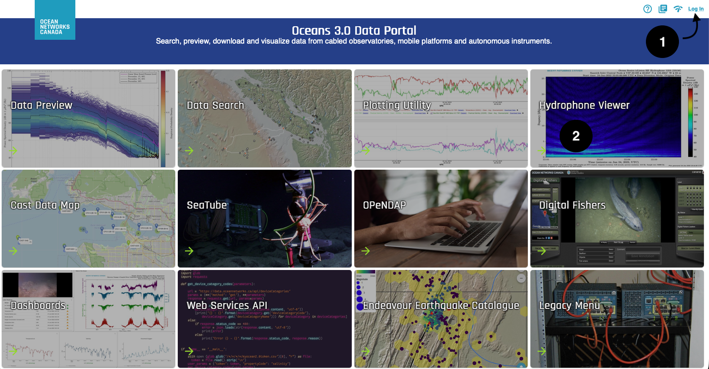
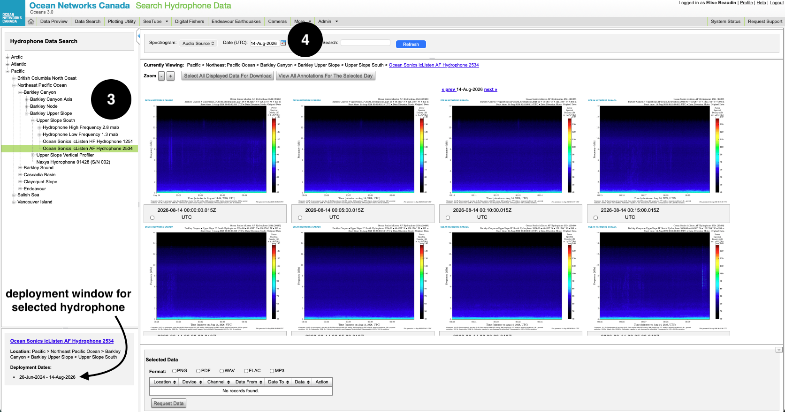
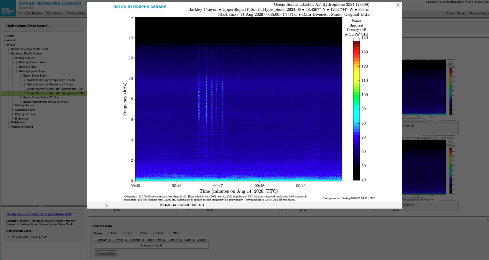
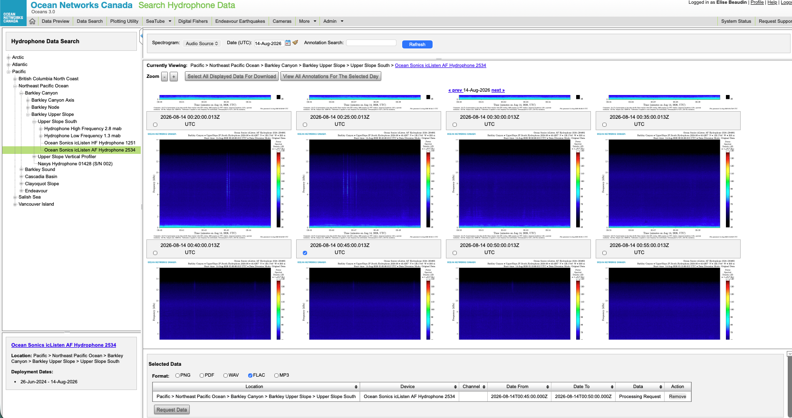

Catalog source: Oceans 3.0 API (deviceCategoryCode=HYDROPHONE).
12. Data Access
This page is about how to get hydrophone data. For what each file type contains, see Data Products.
There are 2 ways to get the data: from ONC data portal Oceans3.0, or using the ONC API. Both methods are explained below, with a helper for the API.
The Hydrophone Viewer is for browsing the pre-generated 5-min spectrograms, and quick downloads to any format including audio. Best for a first look, or sound hunting. Use this when you want to see the soundscape before you download files.
1. Log in to Oceans 3.0
Open https://data.oceannetworks.ca and sign in with your ONC account.
2. Select Hydrophone Viewer

3. Choose a location or hydrophone
From Hydrophone Viewer, a list of location will appear on the left panel, under Hydrophone Data Search.
Pick the site, and the device under the site. The deployment window of each device is listed under.

For hydrophone arrays, hydrophones are under Hydrophone A, B, C or D. Navigate to the hydrophone network page to find past and current deployments.
4. Set the date
The date format has to be like 01-Jan-2026. If a box pops up saying No Data, it either means the selected date is outside of the deployment window, or the hydrophone did not record that day due to some issue.
5. Inspect the spectrogram
Each spectrogram is a visual representation of the soundspace over a 5-min time window. You can click on a spectrogram and it will size up.

6. Data download
When you want the underlying data (FLAC, MAT, PNG, …), you can select a spectrogram by checking the box underneath it.
In the window at the bottom, select a file format (select FLAC for lossless compressed audio file), and hit Request Data. This can take up to 2 minutes for larger files. Once the request has been completed, “Processing Request” becomes a Download that you can hit to retrieve your file.
You can request multiple files at once.

Script downloads of archived files, or order a custom data product. The builder below writes the request in Python, MATLAB, and curl.
All Oceans 3.0 API calls need a personal token. Get one from your Oceans 3.0 profile (Web Services API tab). The token is only inserted into the generated snippet; this page does not send it to ONC.
Hydrophone requests always use deviceCategoryCode = HYDROPHONE. You can query by location (locationCode) or by device (deviceCode).
OpenAPI reference: https://data.oceannetworks.ca/OpenAPI. Client docs: Python · MATLAB.
Install the clients before running a generated snippet:
# Python
pip install onc% MATLAB: install "Ocean Networks Canada API Client Library" from Add-On Explorer
% then:
onc = Onc('YOUR_TOKEN');